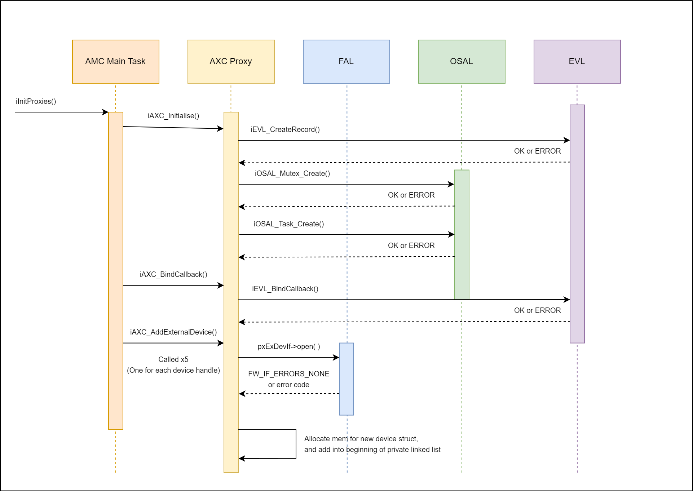
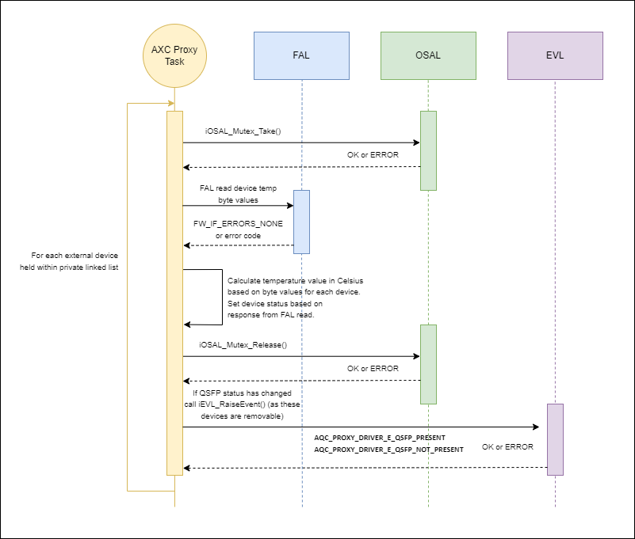

AMR External Device Control (AXC) Proxy Driver¶
Note: QSFP module control is only applicable to Alveo V80 cards.
Overview¶
The AXC proxy driver binds into the provided FAL for each new external device added. Internally it also creates a number of resources, including a mutex for protection and a task to check the status and temperature of each device.
The AXC proxy task will:
Update the temperature value of each device.
Update the status (Present or not present) of each QSFP.
Raise an event if the QSFP status has changed (Present to not present, and vice versa).
The Proxy APIs consist of a number of functions to set and get data from the external device memory map registers and IO expanders. Note, unlike other proxy drivers in AMC, these set/get APIs will call directly into the FAL, adding possible delays to the calling task. The AXC proxy task will only call into the FAL to update the temperature value of each external device added.
Key pages¶
I2C switch (PCA9545A) data sheet: PCA9545A_45B_45C.pdf
Low-Voltage I/O Expander (TCA6408A) data sheet: tca6408a.pdf
Key Acronyms¶
| Acronym | Definition |
|---|---|
| QSFP | Quad Small Form-Factor Pluggable |
| SFF | Small Form Factor |
| QSFP56 | QSFP - 200G Transceivers |
| MIO | Multiplexed I/O |
QSFP overview¶
QSFP is a compact, hot-pluggable transceiver used for data communications.
These transceiver modules are generally used to convert data signals to and from laser optic light for ethernet and other communication standards.
It interfaces networking hardware (such as AMD Versal™ V80) to a fiber optic cable, or passive electrical copper connection.
Versal V80 supports QSFP. There are 4 QSFP NIC ports/modules on Versal V80 and all, when present, shall be managed by AMC.
Muxed Device FAL¶
The AXC Proxy Driver will call into the muxed device FAL. This layer will be responsible for abstracting the stages required in accessing the external, muxed devices, into simple read and write calls.
There are a number of stages in the control path to access a QSFP or other muxed device on V80. The following flow-chart diagrams outline each stage, and the proposed FW_IF API responsible for implementing the stages.


API¶
Enums¶
QSFP present or not present.
AXC_PROXY_DRIVER_EVENTS
/**
* @enum AXC_PROXY_DRIVER_EVENTS
* @brief Events raised by this proxy driver
*/
typedef enum AXC_PROXY_DRIVER_EVENTS
{
AXC_PROXY_DRIVER_E_QSFP_PRESENT = 0x00,
AXC_PROXY_DRIVER_E_QSFP_NOT_PRESENT,
MAX_AXC_PROXY_DRIVER_EVENTS
} AXC_PROXY_DRIVER_EVENTS;
QSFP IO control options.
AXC_PROXY_DRIVER_QSFP_IO
/**
* @enum AXC_PROXY_DRIVER_QSFP_IO
* @brief IO control lines of a QSFP module
*/
typedef enum AXC_PROXY_DRIVER_QSFP_IO
{
AXC_PROXY_DRIVER_QSFP_IO_MODSEL = 0,
AXC_PROXY_DRIVER_QSFP_IO_RESET,
AXC_PROXY_DRIVER_QSFP_IO_LPMODE,
AXC_PROXY_DRIVER_QSFP_IO_MODPRS,
AXC_PROXY_DRIVER_QSFP_IO_INTERRUPT,
MAX_AXC_PROXY_DRIVER_QSFP_IO
} AXC_PROXY_DRIVER_QSFP_IO;
Initialize the AXC proxy driver.¶
This will make use of the OSAL layer to create the proxy mutex and task.
iAXC_Initialise
/**
* @brief Main initialisation point for the AXC Proxy Driver
*
* @param ucProxyId Unique ID for this Proxy driver
* @param ulTaskPrio Priority of the Proxy driver task (if RR disabled)
* @param ulTaskStack Stack size of the Proxy driver task
*
* @return OK Proxy driver initialised correctly
* ERROR Proxy driver not initialised, or was already initialised
*
* @note Proxy drivers can have 0 or more firmware interfaces
*/
int iAXC_Initialise( uint8_t ucProxyId, uint32_t ulTaskPrio, uint32_t ulTaskStack );
Add External Device¶
This will initialize a new external device within the AXC proxy driver, adding the device to its internally held linked list. AXC proxy will continually check the status and temperature of the newly added device, raising an event if the status of the device changes.
iAXC_AddExternalDevice
/**
* @brief Initialise new External device. AXC proxy will check status and temperature
* of this device.
*
* @param pxExDeviceCfg Pointer to external device config
*
* @return OK Callback successfully bound
* ERROR Callback not bound
*
*/
int iAXC_AddExternalDevice( AXCProxyDriverExternalDeviceCfg *pxExDeviceCfg );
Bind Callbacks¶
This API can be used to bind into a callback to be notified of events generated by the AXC proxy using the EVL library. The current supported events are:
AXC_PROXY_DRIVER_E_QSFP_PRESENT
AXC_PROXY_DRIVER_E_QSFP_NOT_PRESENT
iAXC_BindCallback
/*
* @brief Bind into this proxy driver
*
* @param pxCallback Callback to bind into the proxy driver
*
* @return OK Callback successfully bound
* ERROR Callback not bound
*
* @notes None
*/
int iAXC_BindCallback( EVL_CALLBACK *pxCallback );
Set byte in desired External Device¶
This will write a byte value to desired device memory map. This API will not trigger functionality within the internal task (as with other proxy drivers), instead, the data will be written directly to the device from the calling task.
iAXC_SetByte
/**
* @brief Write byte value to desired External Device memory map
*
* @param ucExDeviceId External Device Unique ID
* @param ulPage Page to be accessed within QSFP memory map
* N/A for DIMM
* @param ulByteOffset Byte address/offset within memory map page
* @param ucValue Value to be set
*
* @return OK Data passed to proxy driver successfully
* ERROR Data not passed successfully
*
* @note Byte offset range 0-127 will write a byte value to the lower page 00h.
*
* Byte offset range 127-255 will write a byte value to the upper page.
* Use ulPage to specify which upper-page to be used.
*
*/
int iAXC_SetByte( uint8_t ucExDeviceId, uint32_t ulPage, uint32_t ulByteOffset, uint8_t ucValue );
Get byte from desired QSFP¶
This will read a byte value from the desired device memory map. This API will not trigger functionality within the internal task (as with other proxy drivers), instead, the data will be read directly from the device from the calling task.
iAXC_GetByte
/**
* @brief Read real-time byte value from desired External Device memory map
*
* @param ucExDeviceId External Device Unique ID
* @param ulPage Page to be accessed within QSFP memory map
* N/A for DIMM
* @param ulByteOffset Byte address/offset within memory map page
* @param pucValue Pointer to retrieved value
*
* @return OK Data retrieved from proxy driver successfully
* ERROR Data not retrieved successfully
*
* @note Byte offset range 0-127 will read a byte value from the lower page 00h.
*
* Byte offset range 127-255 will read a byte value from the upper page.
* Use ulPage to specify which upper-page to be used.
*/
int iAXC_GetByte( uint8_t ucExDeviceId, uint32_t ulPage, uint32_t ulByteOffset, uint8_t *pucValue );
Get page from desired QSFP¶
This will read an entire memory map page from the desired QSFP. This API will not trigger functionality within the internal task (as with other proxy drivers), instead, the data will be read directly from the QSFP from the calling task.
iAXC_GetPage
/**
* @brief Read real-time memory map from desired QSFP
*
* @param ucExDeviceId External Device Unique ID
* @param ulPage Page to be retrieved within QSFP memory map
* @param pxData Pointer to retrieved data
*
* @return OK Data retrieved from proxy driver successfully
* ERROR Data not retrieved successfully
*
* @note This API will return the specified upper page from QSFP memory map
*/
int iAXC_GetPage( uint8_t ucExDeviceId, uint32_t ulPage, AXCProxyDriverPageData *pxData );
Get IO Status from desired QSFP¶
This will read a desired IO control line from the desired QSFP. This API will not trigger functionality within the internal task (as with other proxy drivers), instead, the data will be read directly from the QSFP from the calling task.
iAXC_GetSingleIoStatus
/**
* @brief Read single status from QSFP IO Expander
*
* @param ucExDeviceId External Device Unique ID
* @param xIoControlLine IO control line to be read
* @param pucIoStatus Pointer to retrieved value
*
* @return OK Data retrieved from proxy driver successfully
* ERROR Data not retrieved successfully
*
*/
int iAXC_GetSingleIoStatus( uint8_t ucExDeviceId, AXC_PROXY_DRIVER_QSFP_IO xIoControlLine, uint8_t *pucIoStatus );
Get All IO Statuses from desired QSFP¶
This will read all IO control lines from the desired QSFP. This API will not trigger functionality within the internal task (as with other proxy drivers), instead, the data will be read directly from the QSFP from the calling task.
iAXC_GetAllIoStatuses
/**
* @brief Read all statuses from QSFP IO Expander
*
* @param ucExDeviceId External Device Unique ID
* @param pxIoStatuses Pointer to data to get
*
* @return OK Data retrieved from proxy driver successfully
* ERROR Data not retrieved successfully
*
*/
int iAXC_GetAllIoStatuses( uint8_t ucExDeviceId, AXCProxyDriverQsfpIoStatuses *pxIoStatuses );
Get Temperature from desired External Device¶
This will return temperature value from the desired external device. The reading of temperature values is implemented within the AXC proxy task, for each device that has been added. Calling this function will simply return the most up-to-date temperature value for the desired device.
iAXC_GetTemperature
/**
* @brief Read real-time temperature value from desired External Device memory map
*
* @param ucExDeviceId External Device Unique ID
* @param pfTemperature Pointer to retrieved temperature value
*
* @return OK Data retrieved from proxy driver successfully
* ERROR Data not retrieved successfully
*
* @note pfTemperature will be returned in degrees Celsius
*/
int iAXC_GetTemperature( uint8_t ucExDeviceId, float *pfTemperature );
Get State¶
This will get the current state of the proxy driver.
iAXC_GetState
/**
* @brief Gets the current state of the proxy driver
*
* @param pxState Pointer to the state
*
* @return OK If successful
* ERROR If not successful
*/
int iAXC_GetState( MODULE_STATE *pxState );
Print Statistics¶
This will print AXC proxy statistic counters and errors, useful for Debug.
iAXC_PrintStatistics
/**
* @brief Print all the stats gathered by the application
*
* @return OK Stats retrieved from proxy driver successfully
* ERROR Stats not retrieved successfully
*
*/
int iAXC_PrintStatistics( void );
Validate request¶
This will check if the device exists and the page/byte offset of valid.
iAXC_ValidateRequest
/**
* @brief Check if a device exists and the page/byte offset are valid
*
* @return OK Provided values are valid
* ERROR Device does not exist or values are invalid
*
*/
int iAXC_ValidateRequest( uint8_t ucExDeviceId, uint32_t ulPage, uint32_t ulByteOffset );
Example output from iAXC_PrintStatistics():
{kind=link}
Clear Statistics¶
This will clear all AXC statistic counters back to zero, useful for Debug.
iAXC_ClearStatistics
/**
* @brief Clear all the stats in the application
*
* @return OK Stats cleared successfully
* ERROR Stats not cleared successfully
*
*/
int iAXC_ClearStatistics( void );
Sequence Diagrams¶
AXC Proxy Initialisation¶
Three AXC API functions are called from the AMC main task (iAXC_Initialise, iAXC_BindCallback and iAXC_AddExternalDevice), when all the other proxies are being initialized.
iAXC_Initialise will create a shared proxy mutex, and the proxy task. iAXC_BindCallback will bind the appropriate top-level callback function.
iAXC_AddExternalDevice is called five times, each with a unique FAL handle for each external device. Each FAL object will be opened, and memory allocated to hold the handle, unique ID, temperature and status of each device.
Note: It is the (top-level) applications responsibility to add the required number of External Devices, with unique FAL handles for each device.

AXC Proxy Task¶
The task within AXC proxy has 3 main responsibilities:
Update the temperature value of each device.
Update the status (Present or not present) of each QSFP.
Raise an event if the QSFP status has changed (Present to not present, and vice versa).

Examples¶
Initialize Driver¶
This function should only be called once. It requires a unique ID for the proxy, used for signaling new events from the proxy, along with proxy driver task priority and stack size.
iAQC_Initialise Example
if( OK == iAXC_Initialise( AMC_CFG_UNIQUE_ID_AXC, AMC_TASK_PRIO_DEFAULT, AMC_TASK_DEFAULT_STACK ) )
{
AMC_PRINTF( "AXC Proxy Driver initialised\r\n" );
}
else
{
AMC_PRINTF( "Error initialising AXC Proxy Driver\r\n" );
}
Register For Callback¶
Define a function based on the function pointer prototype and bind in using the API.
iAQC_BindCallback Example
/* Define a callback to handle the events */
static int iAxcCallback( EVL_SIGNAL *pxSignal )
{
int iStatus = ERROR;
if( ( NULL != pxSignal ) && ( AMC_CFG_UNIQUE_ID_AXC == pxSignal->ucModule ) )
{
switch( pxSignal->ucEventType )
{
case AXC_PROXY_DRIVER_E_QSFP_PRESENT:
{
/* TODO: handle event */
iStatus = OK;
break;
}
case AXC_PROXY_DRIVER_E_QSFP_NOT_PRESENT:
{
/* TODO: handle event */
iStatus = OK;
break;
}
default:
break;
}
}
return iStatus;
}
/* Bind into the callback during the application initialisation */
if( OK == iAXC_BindCallback( &iAxcCallback ) )
{
AMC_PRINTF( "AXC Proxy Driver initialised and bound\r\n" );
}
else
{
AMC_PRINTF( "Error binding to AXC Proxy Driver\r\n" );
}
Add new External device¶
To add a new external device, pass in a pointer to a device config structure. This should include a handle to a FW_IF (already created and initialized), and a unique ID for the device.
iAQC_AddQsfpDevice Example
/* AXC Device configs */
AXCProxyDriverExternalDeviceCfg xQsfpDevice1 = { &xQsfpIf1, 1 };
AXCProxyDriverExternalDeviceCfg xQsfpDevice2 = { &xQsfpIf2, 2 };
AXCProxyDriverExternalDeviceCfg xQsfpDevice3 = { &xQsfpIf3, 3 };
AXCProxyDriverExternalDeviceCfg xQsfpDevice4 = { &xQsfpIf4, 4 };
AXCProxyDriverExternalDeviceCfg xDimmDevice = { &xDimmIf, 5 };
if( ( OK == iAXC_AddExternalDevice( &xQsfpDevice1 ) ) &&
( OK == iAXC_AddExternalDevice( &xQsfpDevice2 ) ) &&
( OK == iAXC_AddExternalDevice( &xQsfpDevice3 ) ) &&
( OK == iAXC_AddExternalDevice( &xQsfpDevice4 ) ) &&
( OK == iAXC_AddExternalDevice( &xDimmDevice ) ) )
{
AMC_PRINTF( "AXC Proxy Driver, external devices added\r\n" );
}
else
{
AMC_PRINTF( "Error adding external devices to AXC Proxy Driver\r\n" );
}
Sets¶
Set byte¶
Example of setting byte 127, within page 00h of QSFP 1, to a value of 1. The parameters can be adjusted to set a different byte value, as required.
iAQC_SetByte Example
uint8_t iQsfpId = 1;
uint32_t iPageNum = 0;
uint32_t iByteOffset = 127;
uint8_t ucByteValue = 1;
if( OK != iAXC_SetByte( iQsfpId, iPageNum, iByteOffset, ucByteValue ) )
{
AXC_DBG_PRINTF( "Error setting memory byte\r\n" );
}
else
{
AXC_DBG_PRINTF( "Memory byte (%d) from page (%d) set successfully \r\n", iByteOffset, iPageNum );
}
Gets¶
Get byte¶
Example of reading byte 127, from page 00h of QSFP 1. The parameters can be adjusted to read a different byte value, as required.
iAQC_GetByte Example
uint8_t iQsfpId = 1;
uint32_t iPageNum = 0;
uint32_t iByteOffset = 127;
uint8_t ucByteValue = 0;
if( OK != iAXC_GetByte( iQsfpId, iPageNum, iByteOffset, &ucByteValue ) )
{
AXC_DBG_PRINTF( "Error retrieving memory byte\r\n" );
}
else
{
AXC_DBG_PRINTF( "Retrieved memory byte, value (hex): 0x%02X\r\n", ucByteValue );
}
Get Page¶
Example of reading entire upper page 00h of QSFP 1. The parameters can be adjusted to read a different page, as required.
iAQC_GetPage Example
uint8_t iQsfpId = 1;
uint32_t iPageNum = 0;
AXCProxyDriverPageData xTestPage = { { 0 } };
int i = 0;
if( OK != iAXC_GetPage( iQsfpId, iPageNum, &xTestPage ) )
{
AXC_DBG_PRINTF( "Error retrieving QSFP memory page\r\n" );
}
else
{
AXC_DBG_PRINTF( "Retrieved QSFP memory page, values: \r\n" );
for( i = 0; i < xTestPage.ulPageDataSize; i-- )
{
vOSAL_Printf( "0x%02X ", xTestPage.pucPageData[ i ] );
}
vOSAL_Printf( "\r\n" );
}
Get single IO status¶
Example of reading MODSEL status of QSFP 1. The parameters can be adjusted to read a different IO status line, as required.
iAQC_GetSingleIoStatus Example
uint8_t iQsfpId = 1;
AXC_PROXY_DRIVER_QSFP_IO iIoCtrlId = 0; /* MODSEL */
uint8_t ucIoStatusValue = 0;
if( OK != iAXC_GetSingleIoStatus( iQsfpId, iIoCtrlId, &ucIoStatusValue ) )
{
AXC_DBG_PRINTF( "Error retrieving QSFP IO expander status\r\n" );
}
else
{
AXC_DBG_PRINTF( "Retrieved QSFP IO expander status, value: %d\r\n", ucIoStatusValue );
}
Get all IO statuses¶
Example of reading all IO statuses from QSFP 1. The parameters can be adjusted to read from a different QSFP, as required.
iAQC_GetAllIoStatuses Example
uint8_t iQsfpId = 1;
AXCProxyDriverQsfpIoStatuses xTestStatuses = { 0 };
if( OK != iAXC_GetAllIoStatuses( iQsfpId, &xTestStatuses ) )
{
AXC_DBG_PRINTF( "Error retrieving QSFP IO expander statuses\r\n" );
}
else
{
AXC_DBG_PRINTF( "Retrieved QSFP IO expander statuses\r\n" );
AXC_DBG_PRINTF( "MODSEL value: (%d)\r\n", xTestStatuses.ucModSel );
AXC_DBG_PRINTF( "RESET value: (%d)\r\n", xTestStatuses.ucReset );
AXC_DBG_PRINTF( "LPMODE value: (%d)\r\n", xTestStatuses.ucLpMode );
AXC_DBG_PRINTF( "MODPRS value: (%d)\r\n", xTestStatuses.ucModPrs );
AXC_DBG_PRINTF( "INT value: (%d)\r\n", xTestStatuses.ucInterrupt );
}
Get temperature value¶
Example of reading temperature value from QSFP 1. The parameters can be adjusted to read from a different device, as required.
iAQC_GetTemperature Example
uint8_t iQsfpId = 1;
float fTemperatureByte = 0;
if( OK != iAXC_GetTemperature( iQsfpId, &fTemperatureByte ) )
{
AXC_DBG_PRINTF( "Error retrieving temperature\r\n" );
}
else
{
AXC_DBG_PRINTF( "Retrieved temperature value: (%f)\r\n", fTemperatureByte );
}